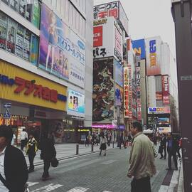
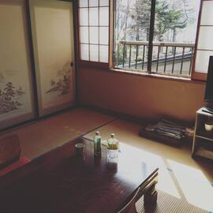
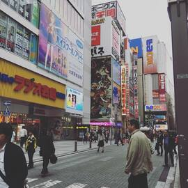
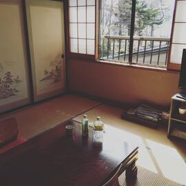

Todo el dinero que puedes ahorrar, cambialo a dólares. Veamos un repaso de las diferentes maneras de adquirir dólares en Argentina.
Comprar dólar a valor “oficial”
En Argentina, por más que hubo periodos donde no había restricciones a la compra de moneda extranjera, durante los últimos 20 años hemos vivido con el famoso “cepo cambiario”, el cual limita la compra de moneda extranjera por mes. Por lo general, el límite es de 200 dólares por persona por mes, sujeto a restricciones.
Este dólar siempre va a ser más “barato” que comprarlo en una “cueva”, si estás habilitado a comprar, compra lo más que puedas. Pídeles a familiares que si pueden comprar dólares a valor oficial por ti, y así “ceder” su cupo.
Comprar dólar blue
Para los argentinos no hace falta explicar qué significa dolar blue. Para los extranjeros, se llama dolar blue a los dólares obtenidos en el mercado paralelo a la cotización oficial.
En Argentina, por más que hubo periodos donde no había restricciones a la compra de moneda extranjera, durante los últimos 20 años hemos vivido con el famoso “cepo cambiario”, el cual limita la compra de moneda extranjera por mes. Por lo general, el límite es de 200 dólares por persona por mes, sujeto a restricciones. Si no tienes una cueva de confianza, pregunta a amigos o familiares. Hay que tener cuidado de que no engañen con billetes falsos!
 


